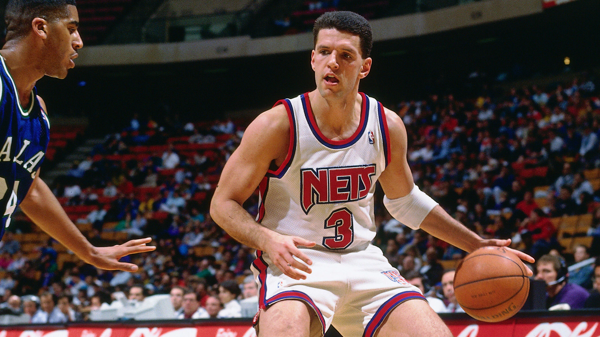
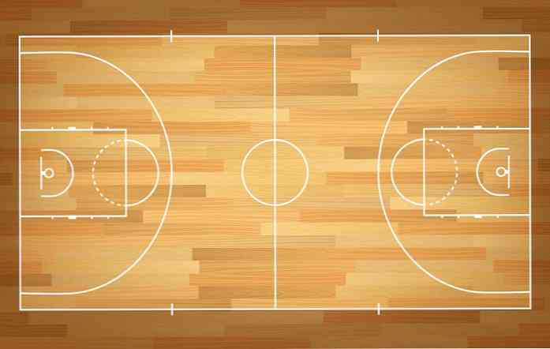

Košarka
Košarka je sport u kojem dva tima sastavljena od pet igrača koji
pokušavaju ostvariti što više poena (bodova) ubacivanjem lopte
kroz obruč koša pod organiziranim pravilima. Kada se to dogodi
govori se o košu.
Do bodova se dolazi ubacivanjem lopte kroz obruč koša pod uvjetom da je lopta kroz obruč prošla odozgo. Momčad koja na kraju utakmice ostvari više bodova pobjednik je. Koš zabijen unutar luka vrijedi 2 boda, iza luka vrijedi 3 (trica), a slobodno bacanje vrijedi 1 bod. Loptom se upravlja njezinim odbacivanjem od podloge (dribling) ili međusobnim dodavanjem između suigrača. Tjelesni kontakt koji ometa igrača u igri nije dozvoljen (prekršaj). Postoje strogo određena pravila i načini na koje se lopta smije voditi.
Do bodova se dolazi ubacivanjem lopte kroz obruč koša pod uvjetom da je lopta kroz obruč prošla odozgo. Momčad koja na kraju utakmice ostvari više bodova pobjednik je. Koš zabijen unutar luka vrijedi 2 boda, iza luka vrijedi 3 (trica), a slobodno bacanje vrijedi 1 bod. Loptom se upravlja njezinim odbacivanjem od podloge (dribling) ili međusobnim dodavanjem između suigrača. Tjelesni kontakt koji ometa igrača u igri nije dozvoljen (prekršaj). Postoje strogo određena pravila i načini na koje se lopta smije voditi.

Hrvatska košarkaška reprezentacija nastupa od 1991. godine, kada
se osamostalio Hrvatski košarkaški savez.
Reprezentacija se nalazi na 21. mjestu na svijetu po plasmanu FIBA-e.
Hrvatska je svoje zlatne dane košarke imala tijekom godina osamostaljivanja (1992. – 1995.), osvojivši tri brončane medalje i jednu srebrnu.
Naš najpozbatiji košarkaš je Dražen Petrović wiki
Wikipedija
Reprezentacija se nalazi na 21. mjestu na svijetu po plasmanu FIBA-e.
Hrvatska je svoje zlatne dane košarke imala tijekom godina osamostaljivanja (1992. – 1995.), osvojivši tri brončane medalje i jednu srebrnu.
Naš najpozbatiji košarkaš je Dražen Petrović wiki
Wikipedija

Dimenzije košarkaškog terena iznose:
28 m (dužina) x 15 m (širina) – standardna
29 m (dužina) x 15 metara (širina) – NBA liga
Podloga za igranje mora biti parket.
Linija za tri boda je na udaljenosti od 6.75 m od koša.
Linije na terenu su široke 5 cm. Minimalno 2 m oko terena ne smiju biti nikakve prepreke. Visina dvorane mora biti najmanje 7 metara.
izvor
